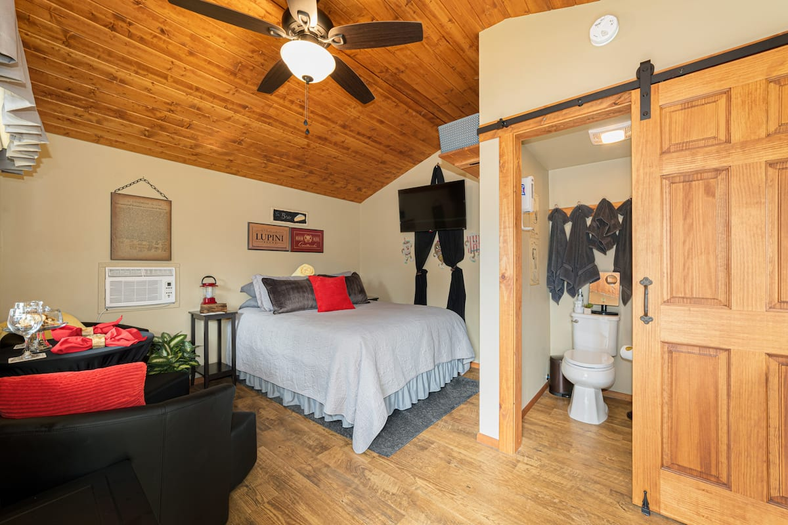
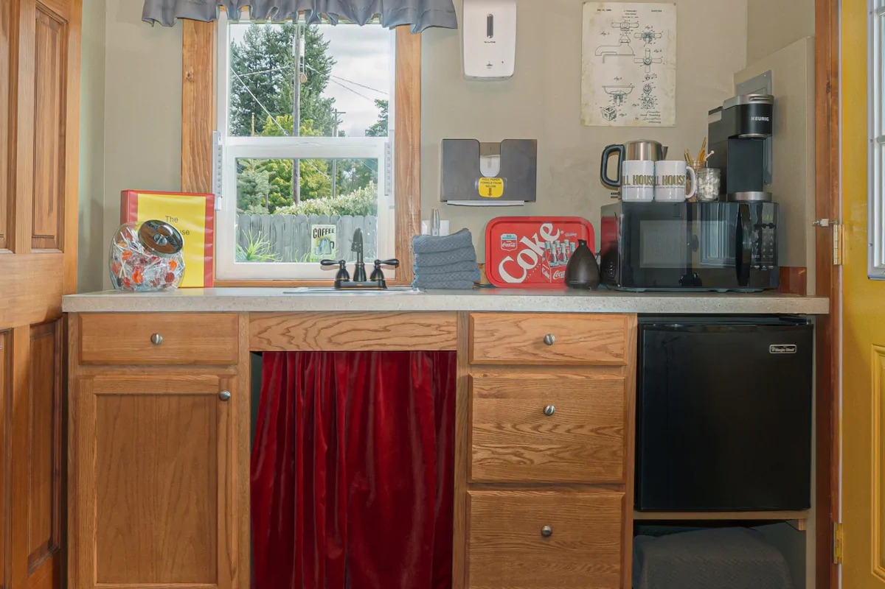

The Mill House
The Mill House is your home away from home. Located in cozy Coeur d'Alene Idaho the Mill House is your home base for exploring this lakeside getaway town. We are located a few minutes walk from the heart of downtown Couer d'Alene and Lake Couer d'Alene making sightseeing and windowshopping a breeze. If you need any suggestions on where to go, please check out the best of cda link at the top. While the Mill House is tiny, it has everything that you might need on your stay. A tiny cottage-like guest-house that has been transformed into a tourists dream, it is the perfect stay for 1-3 people with a cozy Queen-sized bed and a cot available upon request. The Mill House is equiped its own bathroom, microwave, min-fridge and televison with Wifi also provided.
Ammenities
The Mill House also features little touches such as:
- Freshly baked cookies upon your arrival
- Complementary access to streaming services
- Free Parking on site (no parking garages to worry about)
- Comfy deck and patio space with furnishing to enjoy the fresh air
- A nearby family of cats that always makes for interesting viewing (see "The Cats of Coeur d'Alene" for more info)
If you have any additional questions, don't hesitate to shoot me an email and if you're ready to book, please do so through the app.